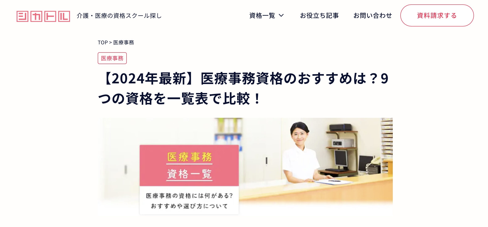
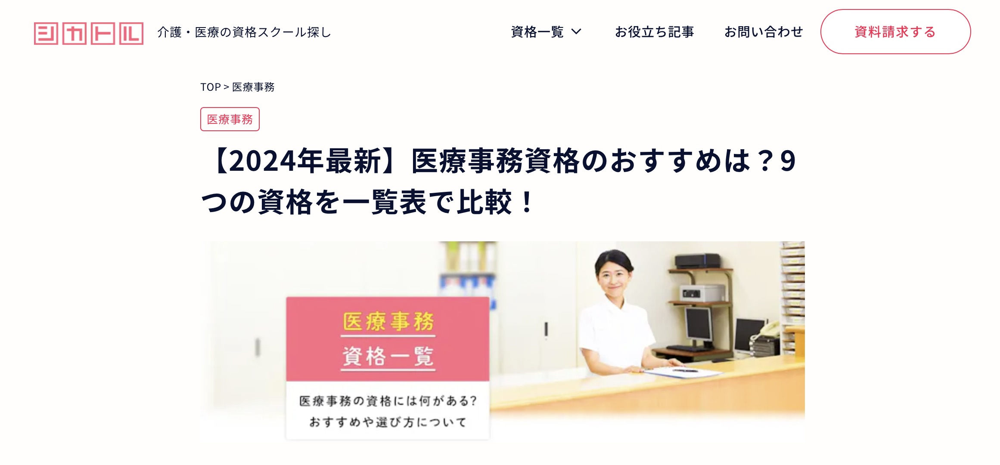

2024/05/30
医療事務 ９つ
５月から勤務している訪問看護ステーションの事務職（医療事務の資格不要）
行政へ申請したらもらえる加算額や、利用者様にとってお得になる制度がないのか？気になった。
基本が分からないから医療事務勉強してみようと思いネット検索、なんと医療事務の資格は９つもあるらしい、どれが良いのか悩む。
５月から勤務している訪問看護ステーションの事務職（医療事務の資格不要）
行政へ申請したらもらえる加算額や、利用者様にとってお得になる制度がないのか？気になった。
基本が分からないから医療事務勉強してみようと思いネット検索、なんと医療事務の資格は９つもあるらしい、どれが良いのか悩む。
